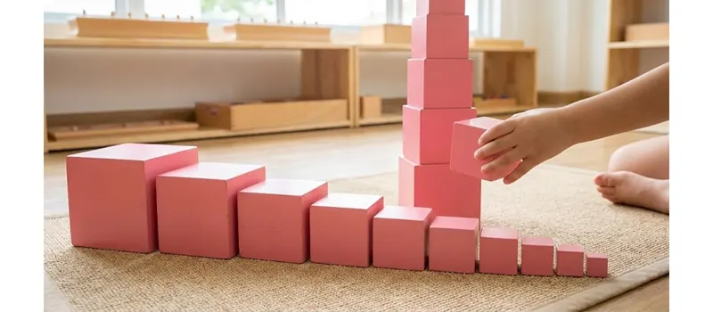
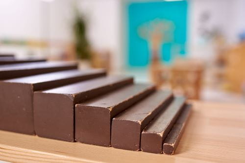
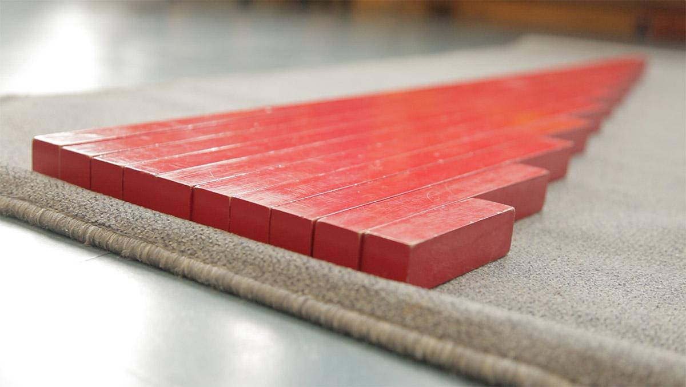
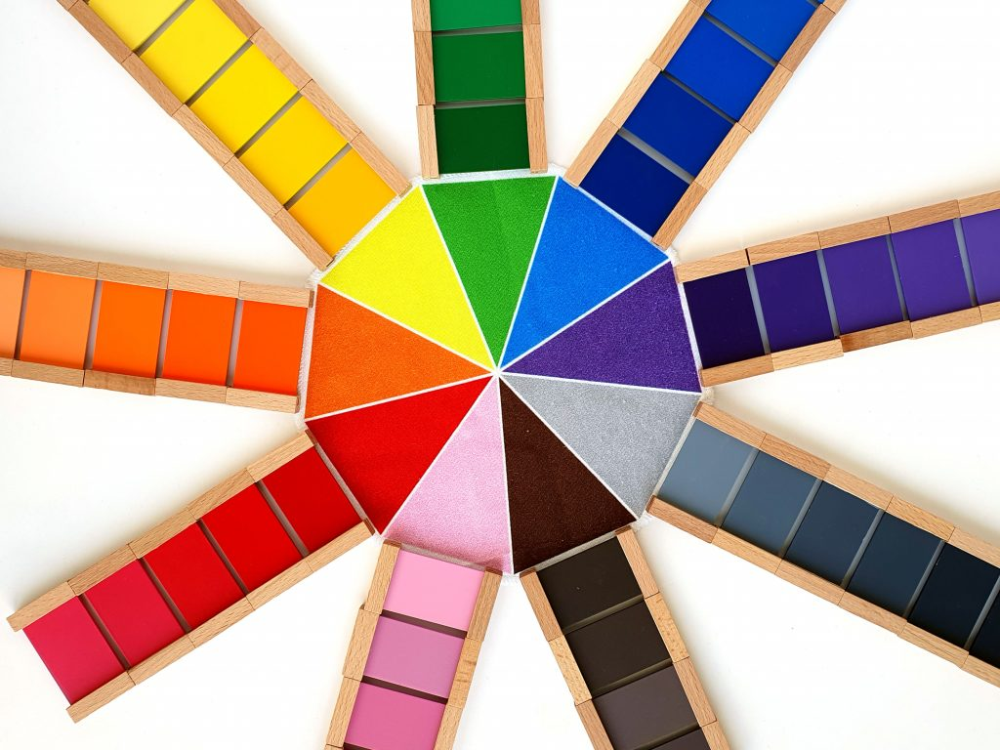

Pink Tower
Children explore size and dimension by building a tower from the largest cube to the smallest, strengthening visual discrimination and coordination.
Montessori Curriculum
Montessori Sensorial materials help children explore the world through their senses. By refining sight, touch, sound, smell, taste, weight, shape, and dimension, children build observation skills and prepare for future learning in language, mathematics, science, and beyond.
Sensorial Education
Sensorial education is an essential part of the Montessori curriculum. It helps children refine their senses by giving them carefully designed materials that isolate qualities such as size, shape, colour, texture, sound, weight, and dimension.
Young children naturally learn through their senses. They touch, compare, sort, listen, observe, and explore the world around them. Montessori Sensorial materials support this natural development by helping children notice differences, recognize patterns, and organize information clearly.
These activities prepare children for more advanced learning. Before children work with abstract ideas in mathematics, language, science, or geometry, they first build a strong foundation through concrete sensory experiences.
At Together We Grow Montessori School, Sensorial activities help children develop focus, observation, problem-solving, vocabulary, coordination, and confidence through purposeful hands-on exploration.
Why the Senses Matter
In early childhood, the senses are one of the main ways children understand the world. They learn by noticing what is large or small, rough or smooth, loud or quiet, heavy or light, long or short, and similar or different.
Montessori Sensorial materials help children make these discoveries in an organized and purposeful way. Each material isolates one quality at a time, allowing children to focus carefully and develop sharper observation skills.
As children compare, grade, match, and classify Sensorial materials, they strengthen logical thinking, concentration, visual discrimination, language, and problem-solving. These are important foundations for future academic learning and everyday decision-making.
Montessori Sensorial Materials
Montessori Sensorial materials are carefully designed so that each activity focuses on one characteristic at a time. Rather than overwhelming children with multiple concepts, every material helps them notice, compare, and classify a single quality through hands-on exploration.

Children explore size and dimension by building a tower from the largest cube to the smallest, strengthening visual discrimination and coordination.

Children compare thickness and width while arranging prisms in sequence, preparing for mathematical thinking and geometric understanding.

By arranging rods from shortest to longest, children develop an understanding of length, order, and measurement.

Children match, sort, and grade colours while refining visual perception, concentration, and colour vocabulary.
Learning Through Exploration
Montessori Sensorial materials encourage children to explore, compare, classify, and discover relationships independently. Rather than being told the correct answer, children learn by observing, experimenting, and repeating activities until they reach their own understanding.
Many Sensorial materials include a built-in control of error, allowing children to recognize and correct mistakes without relying on an adult. This promotes independence, perseverance, and confidence while making learning both engaging and rewarding.
As children repeat Sensorial activities, they strengthen concentration, attention to detail, logical thinking, and problem-solving. These experiences help them organize information more effectively and prepare them for increasingly complex concepts across the Montessori curriculum.
Because learning is active rather than passive, children often remain deeply engaged and take genuine pride in discovering solutions on their own.
Preparing for the Future
Montessori Sensorial education is far more than learning to recognize colours, shapes, or sizes. By refining their senses, children develop the ability to observe carefully, compare accurately, classify information, and recognize patterns—all essential skills for future academic learning.
These experiences prepare children for reading by strengthening visual discrimination, for writing by refining hand-eye coordination and control of movement, and for mathematics by helping them understand order, sequence, dimension, and relationships. Scientific thinking also begins to develop as children learn to observe, compare, and draw conclusions from what they discover.
Beyond academics, Sensorial activities encourage patience, concentration, perseverance, and confidence. Children learn that careful observation and repeated practice lead to deeper understanding, helping them become thoughtful, independent learners.
Montessori recognizes that children first understand the world through their senses. By providing rich sensory experiences during the early years, Sensorial education lays a strong foundation for learning that continues well beyond preschool.
At Together We Grow Montessori School
At Together We Grow Montessori School, Sensorial education is woven into each child's daily Montessori experience. Our carefully prepared classroom offers authentic Montessori Sensorial materials that encourage children to observe, compare, classify, and discover independently through hands-on exploration.
Children work with beautifully designed materials at their own pace, gradually refining their visual, tactile, auditory, and spatial perception. Each activity is presented individually, allowing children to build confidence through repetition while developing concentration and a genuine love of learning.
Our Montessori educators carefully observe each child's readiness and introduce new materials when appropriate. Rather than providing answers, teachers guide children to make discoveries themselves, encouraging independence, curiosity, and deeper understanding.
Through Sensorial education, children learn to notice details, recognize patterns, solve problems, and organize information with confidence. These essential skills support not only future academic success but also a lifelong appreciation for exploring and understanding the world around them.
Frequently Asked Questions
Sensorial education helps children refine their senses through carefully designed Montessori materials. By exploring qualities such as size, colour, texture, sound, shape, and dimension, children develop observation, classification, and problem-solving skills.
Sensorial materials help children organize information through hands-on exploration. They prepare children for later learning in language, mathematics, science, and geometry while strengthening concentration and logical thinking.
Well-known Montessori Sensorial materials include the Pink Tower, Brown Stair, Red Rods, Colour Tablets, Knobbed Cylinders, Geometric Solids, and Sound Cylinders.
Each material isolates one quality at a time, allowing children to compare, classify, and discover patterns independently. Many materials also include a built-in control of error so children can recognize and correct mistakes without relying on an adult.
Children work with authentic Montessori Sensorial materials every day in a carefully prepared classroom. Montessori educators introduce each material individually and encourage children to explore, repeat, and discover at their own pace.
The beauty of Montessori Sensorial education is best experienced in person. Visit Together We Grow Montessori School and see how authentic Montessori materials help children build observation, concentration, confidence, and a lifelong love of learning.
Book a School Tour